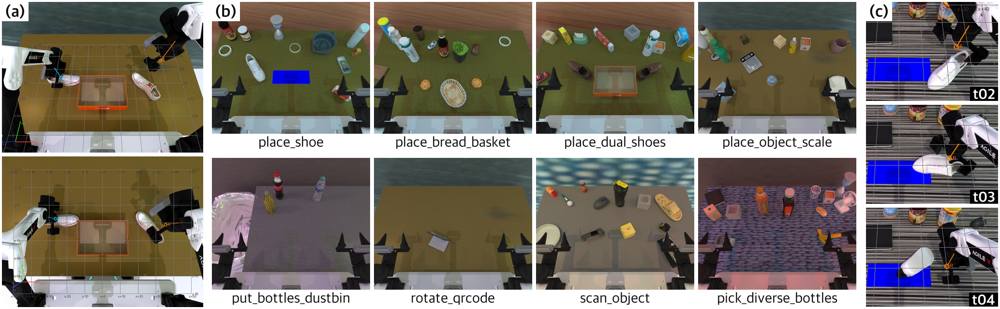
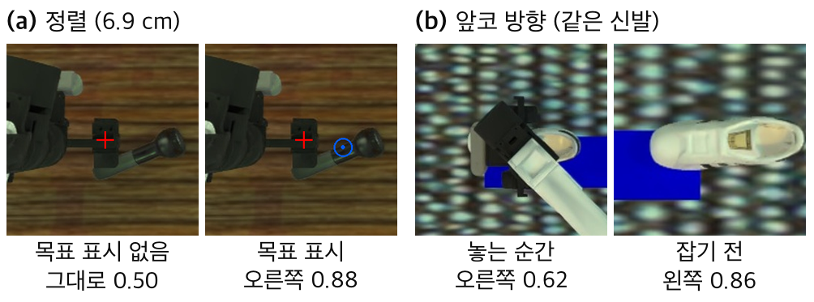

[소속]
요약 RoboDawn은 추가 학습 없는 시각-언어 모델(VLM)이 매 턴 영상을 보고 명령을 내려 양팔 로봇을 움직이게 하는 제어 프레임워크로, 성공률은 높지만 느리다. 우리는 RoboTwin 2.0의 18과제를 재현해 이를 분석하고, 계획 VLM(Gemini 3.8 Flash)의 판단 일부를 약 80배 빠른 판별형 결정 모델 Clef에 위임하는 세 가지 방식을 시험했다. 가장 흔한 실패는 의미 판단 오류가 아니라 접근 중 충돌이었다. Clef는 목표 지점이 영상에 없으면 그리퍼 정렬 여부를 잘 구별하지 못했지만(AUC 0.61), 실제 파지 지점을 표시하면 정확히 판단했다(AUC 1.00). 목표가 정해지면 따라가는 일은 규칙으로 충분하므로, 어려운 것은 목표를 정하는 일이다. 세 방식은 실제 실행에서 성공률을 바꾸지 못했거나 오프라인 비교에서 비교 기준을 넘지 못했다. 이를 근거로 피지컬 AI에서 결정 모델의 한계 다섯 가지(질문 설계, 부분 관측, 상태 부재, 이산 출력과 센서, 속도와 범용성)를 정리한다.

RoboDawn[1]은 추가 학습 없는 VLM이 매 턴(VLM 호출 한 번과 그 명령의 실행) 영상과 상태를 보고 “왼팔 z −5 cm” 같은 명령을 내리게 하는 제어 프레임워크로, RoboTwin 2.0[2]에서 학습 기반 정책에 견줄 성공률을 보였지만 느리다. 우리 실행에서 계획 VLM인 Gemini 3.8 Flash의 턴당 지연 중앙값은 37~50초로, 로봇 동작(2.0초)의 약 20배였다. 그 판단 일부를 빠른 모델에 위임할 수 있다면 이 지연을 줄일 수 있다. 우리는 이 역할에 Cloudflare의 결정 모델(decision model) Clef[3]를 썼다. Clef는 이미지(최대 4장)와 형식이 정해진 질문(예/아니오, 선택, 점수)을 받아 텍스트 대신 선택지별 확률을 낸다. 우리가 잰 호출당 지연은 약 0.45초, 요금은 약 $0.0002로 각각 Gemini 한 턴의 약 1/80, 1/100이다. 본 논문은 그 결과로 피지컬 AI에서 결정 모델의 한계를 정리한다.
RoboTwin 2.0[2]은 Aloha-AgileX 양팔 로봇 과제 50개로 이루어진 SAPIEN 기반 조작 벤치마크다. 방해 물체, 배경 텍스처, 조명, 탁자 높이, 언어 지시가 에피소드마다 무작위로 바뀌고(그림 1b), 성패는 과제별 판정 함수가 정한다. RoboDawn[1]에서 VLM은 매 턴 영상 4장(그림 1a), 상태 텍스트, 직전 턴에 스스로 남긴 메모, 과제 시연 기록 하나를 받아 move, rotate, point, gripper 명령 1~4개를 내고, 운동 계획기(motion planner)가 명령마다 동작 하나를 실행한다. 저자들은 50과제 전체에서 Gemini 3.8 Flash로 62.2%를 보고했고 평가 에피소드 500개의 기록을 공개했다.
우리는 그중 18과제(과제당 평가 에피소드 10개)를 재현했고, 성공률은 50%로 같은 과제의 공개 기록(50%)과 같았다. 다만 에피소드별 성패는 180개 중 116개만 일치해, 과제당 10개 평가는 변동이 컸다. 18과제는 먼저 분석한 10과제와, 방향(신발·QR·스캔)이나 대상(병·빵·저울) 판단이 필요해 보이는 8과제(그림 1b)로 이루어진다. 10과제에서 시간의 96%는 모델 호출이었고, 같은 하위 목표를 잇는 턴(38%)도 새 목표 턴만큼 추론 토큰을 썼다. 그리퍼 닫기의 86%는 같은 턴의 이동 뒤에 실행되어 VLM이 닫기 직전 자세를 보지 못했고, 집기 과제에서 닫기의 72%는 빈 파지였다. Gemini가 영상에서 읽은 물체 위치는 중앙값 3.9 cm 어긋났다. 8과제(80개 중 33개 성공)는 이후 분석의 기준 실행으로 썼다.
8과제 실패 47개를 턴별 실행 기록과 시뮬레이터 참값(물체 자세, 그리퍼 끝 위치)으로 다시 읽어 원인을 분류했다. 47개 중 25개의 주원인은 접근하다 물체를 넘어뜨리거나 민 것(이하 접근 충돌, 그림 1c)이었고, 17개에서는 물체가 탁자를 벗어났으며, 넘어진 물체는 거의 회복되지 않았다. 10과제 실패 43개에서도 접근 충돌(17개)이 가장 많았다. 반면 8과제를 고른 이유였던 방향·대상 오류가 주원인인 실패는 6개뿐이었다. 실패는 의미 판단보다 내려가기 직전의 기하, 곧 그리퍼 끝이 물체 위에 있는지와 그대로 내려가면 부딪히는지에서 주로 생겼다.
Clef를 Gemini 턴 사이에 두는 세 가지 위임 방식을 시험했다(표 1). 물체 모니터는 매 턴 대상 물체를 다시 찾아 넘어졌는지 판정하고, 회복할 수 없으면 에피소드를 일찍 끝낸다. 의미 판단은 신발 앞코와 QR 면의 방향, 대상 재식별을 묻는다. 시각 서보 정렬은 상단 카메라 크롭에 그리퍼 끝을 빨간 십자로 그리고 파지 지점 쪽 2 cm 이동의 방향(상하좌우 또는 그대로)과 정렬 여부를 물어, Gemini 대신 이동을 반복한다(그림 2a). 물체 모니터만 실제 실행으로, 나머지는 기록된 장면으로 오프라인 평가했다. 비교 기준은 잡음 없는 시뮬레이터 깊이로 만든 규칙(이하 깊이 기반 규칙)과 같은 입력의 Gemini다.
표 1. 위임 방식별 판단과 결과(성공 수 외에는 같은 오프라인 항목)
| 방식 | 판단 (지표) | Clef | 비교 기준 (비교) |
|---|---|---|---|
| 물체 모니터 | 성공 수 (58쌍)* | 29 | 기준 실행 26 (같음) |
| 넘어짐 (AUC) | 0.97† | 깊이 형상 점수 0.99 (같음) | |
| 의미 판단 | 재식별 (정확도) | 0.93‡ | 깊이 추적기 0.90 (같음) |
| 앞코 방향 (정확도) | 0.93 | Gemini 1.00, 깊이 높이 규칙 0.98 (낮음) | |
| 시각 서보 | 정렬 판별 (AUC) | 0.61 | 목표 표시 시 Clef 1.00 |
* 같은 평가 에피소드 58개를 기준 실행과 짝지음(McNemar p = 0.68). Gemini 호출 14~24% 감소는 실패할 에피소드를 일찍 끝낸 결과. † 깊이 수치를 텍스트로 함께 입력. ‡ 깊이 추적기 위치를 사전확률로 결합. 앞코는 팔에 가리지 않은 23개 항목의 4방향 정확도.
정렬은 목표 지점을 정하는 일과 정해진 목표로 그리퍼를 옮기는 일로 나뉜다. 기록된 접근 장면 242개에서 대상 이름만 주면 Clef는 정렬 여부를 잘 구별하지 못했고(AUC 0.61), 목표에서 3~8 cm일 때 맞는 방향은 73%, 반대 방향은 18%였다. 같은 장면에 나중에 실제로 파지된 지점(참값)을 파란 원으로 그리자 AUC는 1.00, 맞는 방향은 98%, 반대는 1%가 되었다(그림 2a). 표시된 목표를 따라가는 판단은 쉽지만, 목표가 좌표로 정해지면 운동 계획기가 팔을 한 번에 옮기므로 빠른 모델이 이동 방향을 고를 필요가 없다. 목표를 정하는 일은 Clef가 하지 못했다.
앞코에서는 묻는 시점이 성패를 갈랐다. 놓는 순간에는 26건 중 14건에서 앞코가 팔과 그리퍼에 가렸고, Clef는 그중 3건만 맞혔다(보일 때는 12건 중 11건). 팔에 가리지 않은 장면에서 신발의 깊이 분할 영역을 중심으로 자른 크롭으로 묻자 4방향 정확도는 0.93이었다(그림 2b). 잡기 전 추정에 그리퍼 회전량을 더해 놓을 때 앞코가 맞는 방향인지 예측하자, 추정이 있는 16건 중 13건을 맞혔다(놓는 순간에 물으면 9건, 깊이 높이 규칙은 16건). 다만 0.93은 같은 크롭의 Gemini(1.00)와 깊이 높이 규칙(0.98)보다 낮았다(표 1).

System 1과 System 2의 구분[4]을 따르는 이중 시스템 로봇[5–8]은 대개 VLM을 느린 System 2에 두고, 빠른 System 1은 로봇 데이터로 학습한 정책에 맡긴다. Helix의 System 1(80M 파라미터)은 200 Hz로 동작한다[5]. 결정 모델은 속도로 보면 계획 VLM과 System 1 사이에 있다. Clef는 고정된 27B 모델에 LoRA를 더해[3] 정해진 질문에 확률로 답하므로 생성형 VLM보다 빠르고 형식 오류가 없지만, 로봇 조작에서는 다섯 가지 한계가 드러났다.
질문이 답보다 어렵다. 결정 모델은 주어진 질문에만 답한다. 정렬(AUC 0.61 → 목표 표시 1.00)과 앞코(가려진 순간 3/14 → 가리지 않은 장면 0.93)에서 성패는 모델이 아니라 무엇을 보여 주고 언제 묻는가에서 갈렸다. 이를 정하는 것은 계획 VLM이나 규칙의 일이며, 결정 모델은 스스로 질문을 만들지 못한다.
가려짐을 알아채지 못한다. 로봇은 자기 팔과 그리퍼가 대상을 가리는 부분 관측 속에서 일한다. 그러나 Clef는 “가려짐” 선택지가 있어도 그 평균 확률이 앞코가 보일 때 0.23, 가려질 때 0.29로 비슷했고, 가려진 신발에서는 뒤꿈치를 앞코로 확신 있게 읽었다. 이는 VLM의 물체 환각(object hallucination)[14]과 닮았으며, 행동을 허용하거나 막는 검증기라면 자기 불확실성을 알아야 한다[15].
상태와 시간을 다루지 못한다. Clef는 호출마다 한 장면에 독립적으로 답한다. 그러나 물리 과제는 시간에 걸쳐 이어지며, 같은 물체를 턴마다 추적하는 일과 잡기 전 추정을 놓을 때까지 옮기는 일(13/16건)은 고유감각(proprioception)과 깊이를 쓰는 규칙이 했다.
출력이 이산적이고 센서를 직접 읽지 못한다. 로봇에 필요한 것은 거리, 각도, 힘 같은 연속량인데 결정 모델은 몇 개의 선택지에 확률을 줄 뿐이어서, 정렬도 2 cm 이동을 반복하는 형태가 된다. 또한 입력이 RGB와 텍스트뿐이라 깊이와 고유감각은 규칙이 계산해 텍스트로 넘겨야 하며, 넘어짐 AUC도 깊이 수치를 붙였을 때 0.92에서 0.97로 올랐다. 이는 VLM이 계량 공간 판단에 약하다는 보고[9–12]와 부합하며, 계량 정보가 있으면 규칙이 직접 판단할 수 있다.
느리고 범용성의 이점이 작다. 우리가 잰 0.45초(네트워크 포함)도, 제공자가 밝힌 0.21초[3]도 System 1의 제어 주기(5~100 ms)보다 길다. 또한 빠른 계층의 판단은 넘어짐, 정렬, 파지 여부처럼 몇 가지로 정해져 있고, 범용 의미 이해가 필요한 방향·대상 오류는 그런 오류를 보려고 고른 8과제에서도 실패 47개 중 6개였다. 같은 크롭을 받은 Gemini는 앞코(1.00 대 0.93)와 표시된 정렬의 방향(같은 항목에서 100% 대 96%)에서 Clef보다 나았다. 우리 조건에서 27B 범용 결정 모델이 계획 VLM과 규칙 사이에서 더할 것은 적었다.
물론 학습 기반 특화 정책은 일반화가 약하다는 보고[7]와 VLM을 로봇 데이터로 학습해 빠른 계층에 두는 설계[8, 13]도 있다. 우리의 주장은 그 자리에 학습 없이 붙인 범용 결정 모델보다 기하 규칙이나 해당 판단용 소형 모델을 먼저 검토해야 한다는 것이다.
결과는 시뮬레이터(잡음 없는 렌더링 깊이)에서 계획 VLM과 결정 모델 하나씩으로 얻었다. 정렬 목표와 대상의 깊이 분할 영역은 계획 VLM의 지정 대신 참값으로 정했고, 소형 특화 모델과는 비교하지 않았다.
계획 VLM의 판단을 결정 모델에 위임한 세 방식은 성공률을 바꾸지 못했거나 비교 기준을 넘지 못했다. 목표가 표시되었거나 대상이 보이는 장면의 판단은 결정 모델도 내렸지만, 이어 가는 일은 규칙이 했고 목표는 정하지 못했다. 결정 모델은 스스로 질문을 정하지 못하고, 가려짐을 알아채지 못하며, 상태와 시간을 다루지 못하고, 연속량과 센서를 직접 읽지 못하며, System 1의 제어 주기보다 느리다. 빠른 계층의 후보로는 기하 규칙이나 소형 특화 모델을 먼저 비교하기를 제안한다.
[1] M.-H. Guo, Z.-H. Mo, J.-J. Wang, Y. Zhang, K. Wang, Y.-X. Deng, J.-P. Zhang, Y. Rao, S.-M. Hu, “Transferring the Intelligence of VLMs to Robotic Control,” arXiv:2609.22966, 2026.
[2] T. Chen et al., “RoboTwin 2.0: A Scalable Data Generator and Benchmark with Strong Domain Randomization for Robust Bimanual Robotic Manipulation,” arXiv:2506.18088, 2025.
[3] M. Chen, “Introducing Clef: our open-source decision models, and new RL fine-tuning platform,” Cloudflare Blog, Oct. 2026. https://blog.cloudflare.com/clef-decision-models/
[4] D. Kahneman, Thinking, Fast and Slow, Farrar, Straus and Giroux, 2011.
[5] Figure AI, “Helix: A Vision-Language-Action Model for Generalist Humanoid Control,” Feb. 2025. https://www.figure.ai/news/helix
[6] NVIDIA et al., “GR00T N1: An Open Foundation Model for Generalist Humanoid Robots,” arXiv:2503.14734, 2025.
[7] Q. Bu et al., “Towards Synergistic, Generalized, and Efficient Dual-System for Robotic Manipulation,” arXiv:2410.08001, 2024.
[8] L. X. Shi et al., “Hi Robot: Open-Ended Instruction Following with Hierarchical Vision-Language-Action Models,” ICML, 2025.
[9] P. Rahmanzadehgervi, L. Bolton, M. R. Taesiri, A. T. Nguyen, “Vision Language Models Are Blind,” ACCV, 2024.
[10] X. Fu et al., “BLINK: Multimodal Large Language Models Can See but Not Perceive,” ECCV, 2024.
[11] B. Chen et al., “SpatialVLM: Endowing Vision-Language Models with Spatial Reasoning Capabilities,” CVPR, 2024.
[12] Z. Cai et al., “Holistic Evaluation of Multimodal LLMs on Spatial Intelligence,” arXiv:2508.13142, 2025.
[13] H. Chen et al., “Fast-in-Slow: A Dual-System VLA Model Unifying Fast Manipulation within Slow Reasoning,” NeurIPS, 2025.
[14] Y. Li et al., “Evaluating Object Hallucination in Large Vision-Language Models,” EMNLP, 2023.
[15] A. Z. Ren et al., “Robots That Ask For Help: Uncertainty Alignment for Large Language Model Planners,” CoRL, 2023.